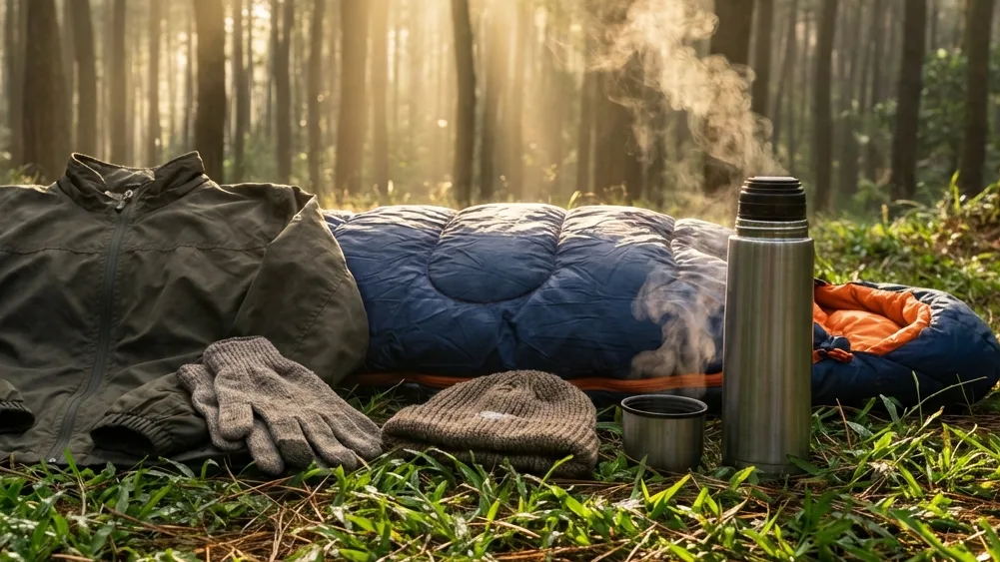

Keindahan lanskap pegunungan Kota Batu memang selalu berhasil menghipnotis jutaan wisatawan setiap tahunnya. Berada di ketinggian yang dikelilingi oleh jajaran gunung megah menjadikan kota ini memiliki udara yang sangat bersih dan menenangkan. Namun, di balik keindahan pesonanya tersebut, terdapat sebuah tantangan alam yang tidak boleh dianggap remeh oleh siapa pun, terutama bagi wisatawan yang memutuskan untuk bermalam di dalam tenda alam terbuka.
Saat matahari terbenam, suhu udara di Kota Batu dapat merosot secara tajam, mengubah udara sejuk menjadi hawa beku yang menusuk hingga ke tulang. Oleh karena itu, melakukan pencarian informasi mengenai Perlengkapan Wajib untuk Menembus Dinginnya Wisata Ground Camping Batu Malang adalah sebuah langkah mitigasi yang teramat sangat penting. Jangan sampai impian Anda untuk melakukan healing dan relaksasi justru berubah menjadi penderitaan semalaman akibat serangan hipotermia ringan karena salah membawa barang. Artikel ini akan menjadi panduan (ultimate guide) Anda dalam menyusun daftar barang bawaan (packing list) teknis untuk memastikan tubuh Anda tetap hangat, aman, dan nyaman selama berlibur.
1. Memahami Karakteristik Cuaca Pegunungan di Kota Batu
Sebelum kita menyusun daftar peralatan ke dalam koper Anda, sangat penting untuk terlebih dahulu memahami "medan pertempuran" yang akan Anda hadapi.
Penurunan Suhu Ekstrem di Malam Hari (Bediding)
Berada di elevasi rata-rata 1.000 hingga 1.500 meter di atas permukaan laut (MDPL), Kota Batu memiliki iklim mikro tersendiri. Pada musim kemarau panjang (umumnya terjadi pada rentang Juni hingga September), fenomena angin monsun Australia membawa massa udara yang sangat dingin. Warga lokal menyebut fenomena suhu ekstrem ini dengan istilah bediding. Pada puncaknya, suhu di sekitar area perkemahan bisa anjlok menyentuh angka 12 hingga 14 derajat Celcius di malam dan dini hari.
Angin Kencang dan Paparan Embun Pagi
Selain suhu dasar yang memang sudah sangat rendah, area kemah yang berlokasi di tebing perbukitan terbuka (biasanya lokasi yang memiliki *view* city light) akan sering dihantam oleh hembusan angin lembah yang cukup kencang. Tiupan angin konstan inilah yang memicu efek wind chill, yang membuat udara yang mengenai kulit Anda terasa jauh lebih membekukan daripada angka suhu yang tertera di aplikasi cuaca pada ponsel pintar Anda. Belum lagi ditambah paparan butiran embun pagi yang akan membuat material kain biasa menjadi lembap dan memicu rasa menggigil.
BACA JUGA (Persiapan & Fasilitas):
2. Sistem Pakaian (Layering System) Penghalau Udara Beku
Kesalahan fatal yang sering dilakukan wisatawan pemula adalah mengandalkan satu buah jaket yang sangat tebal namun mengabaikan lapisan di bawahnya. Untuk bertahan di alam, Anda wajib menguasai prinsip 3-Layering System.
Lapis Pertama (Base Layer): Keringat Cepat Menguap
Lapisan paling dasar yang bersentuhan langsung dengan kulit Anda ini bertugas untuk mengatur kelembapan tubuh. Dilarang keras menggunakan kaus berbahan katun! Katun sangat mudah menyerap keringat namun teramat lambat untuk mengering; jika basah terkena keringat sore hari, kaus katun akan membuat dada Anda membeku di malam hari. Gunakanlah pakaian berbahan polyester, spandex, atau kaos dry-fit olahraga yang mampu membuang uap keringat (breathable) secara kilat.
Lapis Kedua (Mid Layer): Insulasi Penahan Panas
Lapisan tengah bertugas murni sebagai bahan insulasi, yakni mengunci panas alami yang dipancarkan oleh suhu tubuh Anda agar tidak kabur terbuang ke udara sekitar. Pilihan material terbaik untuk mid layer ini adalah jaket berbahan kain fleece (polar), jaket rajut wol tebal, atau jaket gelembung yang berisi bulu angsa asli (down jacket).
Lapis Terluar (Outer Layer): Tameng Angin dan Air
Seberapa tebal pun jaket bulu angsa Anda, hawa panasnya akan lenyap seketika jika ditiup oleh angin lembah yang tajam. Di sinilah peran penting Outer Layer atau cangkang luar. Anda wajib mengenakan jaket bertipe Windbreaker (penahan angin) berbahan parasut tebal, atau lebih baik lagi jaket tipe Hardshell yang memiliki fitur anti-air (waterproof) untuk menghalau hempasan embun malam yang basah.
3. Perlindungan Esensial untuk Ekstremitas Tubuh
Udara beku pertama kali akan menyerang saraf pada bagian paling ujung dari tubuh Anda (ekstremitas). Mengabaikan bagian ini sama saja dengan mengundang penyakit.
Mengamankan Kepala dan Telinga (Beanie Hat)
Sebagian besar paparan panas tubuh menguap melalui bagian ubun-ubun kepala. Selain itu, daun telinga yang dibiarkan terbuka akan terasa perih atau mati rasa jika diterpa angin dingin secara terus-menerus. Masukkan kupluk rajut tebal (beanie hat) ke dalam daftar teratas barang bawaan Anda, dan wajib Anda kenakan menjelang petang hingga waktu tidur tiba.
Sarung Tangan dan Kaus Kaki Ganda
Bawalah minimal sepasang sarung tangan berbahan polar atau rajut wol. Untuk perlindungan pada bagian kaki, Anda dilarang tidur dengan kaki telanjang. Pakailah kaus kaki tebal; bahkan disarankan memakai kaus kaki dobel (dua lapis) saat tidur agar jari kaki tidak mengalami kram atau kesemutan di sepertiga malam.

Penggunaan tenda bertipe double layer (dua lapisan) adalah benteng fisik paling vital untuk memastikan suhu di ruang dalam tenda tetap hangat. (Dokumentasi: Batu Sunrise Camp)4. Peralatan Tidur (Sleep System) Agar Tidur Pulas
Pakaian tebal tidak akan berguna jika punggung Anda harus berhadapan langsung dengan kejamnya suhu dingin yang memancar dari dalam tanah.
Matras Foil Sebagai Penahan Suhu Tanah
Ini adalah rahasia para pendaki profesional. Jangan pernah tidur hanya beralaskan matras karet tipis apalagi langsung beralaskan karpet dasar tenda. Tanah gunung menyerap suhu tubuh Anda secara konduksi dengan amat cepat. Gelarlah matras lembaran berbahan aluminium foil pada lapisan terbawah. Material mengkilap ini secara aktif memantulkan kembali hawa beku tanah ke bawah, sekaligus menahan hawa panas Anda agar tidak tembus ke lantai. Barulah di atasnya, letakkan matras spons empuk atau kasur udara.
Sleeping Bag Berbahan Polar atau Bulu Angsa
Tinggalkan selimut atau bed cover rumah Anda. Selimut rumah memiliki rongga yang terlalu lebar untuk dimasuki oleh angin dingin. Anda sangat diwajibkan menggunakan Sleeping Bag (kantong tidur) berdesain tipe mummy (mengerucut ketat pada bagian ujung kaki). Pilihlah sleeping bag dengan ketebalan yang memadai, minimal yang memiliki pelapis bahan kain polar atau dacron di bagian dalamnya.
5. Memilih Tenda yang Tepat untuk Menghadang Angin
Dalam daftar Perlengkapan Wajib untuk Menembus Dinginnya Wisata Ground Camping Batu Malang, Anda tidak boleh bersikap pelit dalam memilih rumah sementara Anda.
Keharusan Menggunakan Tenda Double Layer
DILARANG KERAS menggunakan tenda parasut murahan tipe satu lapis (single layer). Mengapa? Saat Anda tidur, udara hangat dari napas Anda akan naik dan menabrak kain langit-langit tenda yang terpapar udara dingin luar. Tabrakan suhu ini menciptakan proses kondensasi, menghasilkan embun air dari dalam yang akan menetes membasahi pakaian dan tubuh Anda sepanjang malam. Tenda tipe Double Layer memisahkan lapisan jaring sirkulasi dalam (inner) dengan kain payung anti-hujan di luarnya (flysheet), sehingga embun kondensasi tidak akan pernah menetes mengenai wajah Anda.
BACA JUGA (Destinasi Pilihan):
6. Persiapan Logistik dan Dapur Penghangat Tubuh
Tubuh manusia membutuhkan asupan bahan bakar berupa kalori untuk diubah menjadi energi panas, terutama saat lingkungan sedang berada dalam kondisi suhu ekstrem.
Minuman Hangat Instan dan Termos
Bawalah kompor gas portabel berbahan bakar gas kaleng, lengkap dengan penghalau angin alumunium (windshield). Selalu sediakan sachet minuman penghangat seperti jahe merah instan, teh, atau kopi hitam. Strategi terbaik adalah merebus air dalam jumlah banyak di awal malam, lalu simpan sisa air panas tersebut ke dalam vacuum flask (termos baja tahan karat). Hal ini sangat memudahkan Anda jika mendadak menggigil di tengah malam dan butuh menyeduh minuman panas tanpa harus menyalakan kompor kembali di luar tenda.
Makanan Berkalori Tinggi
Camilan manis berkalori padat seperti cokelat batangan, biskuit gandum, madu sachet, hingga kacang-kacangan sangat cepat dimetabolisme oleh tubuh untuk mendongkrak suhu internal. Bawalah sebagai "senjata darurat" di dalam saku jaket Anda.
7. Opsi Paling Praktis: Menyewa Fasilitas Lengkap
Jika membaca seluruh daftar perlengkapan teknis di atas membuat Anda merasa pusing atau terkendala oleh anggaran pembelian, jangan khawatir, ada satu jalur pintas (hack) liburan yang paling brilian.
Kemudahan Paket All-In di Batu Sunrise Camp
Serahkan segala urusan infrastruktur anti-kedinginan kepada ahlinya. Pengelola wisata premium Batu Sunrise Camp telah memformulasikan penyewaan fasilitas kemah tipe All-In Package. Dengan membayar biaya yang sangat efisien, setibanya Anda di lokasi, sebuah tenda double layer tebal yang bertulang rangka kuat sudah berdiri dengan amat gagah. Matras aluminium foil, kasur spons, hingga sleeping bag polar yang telah dicuci wangi sudah tersedia di dalamnya.
Tidak hanya itu, untuk memastikan keamanan dan kenyamanan komprehensif, Batu Sunrise Camp juga menyediakan akses toilet duduk (flushing) yang super bersih dilengkapi air mengalir, fasilitas colokan listrik agar ponsel Anda tak pernah mati, dan akses menuju perapian fire-pit untuk menyalakan api unggun komunal yang menghangatkan suasana liburan keluarga Anda.
8. Kesimpulan
Menaklukkan suhu udara pegunungan tidaklah menakutkan jika Anda berbekal pengetahuan literasi alam yang memadai. Rangkuman tentang Perlengkapan Wajib untuk Menembus Dinginnya Wisata Ground Camping Batu Malang di atas adalah prosedur keselamatan standar yang tidak boleh Anda sepelekan. Dengan membiasakan diri menerapkan sistem pakaian berlapis (3-layering), mengamankan ekstremitas tubuh dengan kupluk dan sarung tangan, serta menghindari tenda murahan satu lapis, Anda dijamin tidak akan pernah tersiksa oleh serangan hipotermia. Namun, jika Anda tidak memiliki waktu untuk mengumpulkan peralatan tersebut, mengalihkan dana Anda untuk menyewa paket kemah komplet di destinasi terpercaya layaknya Batu Sunrise Camp adalah langkah investasi yang paling cerdas untuk meraih kebahagiaan healing yang sesungguhnya.